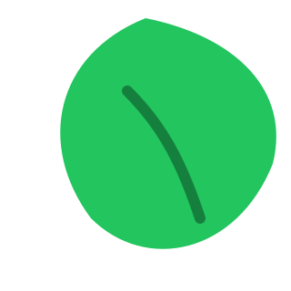

EcoHub
Início
Gestão
Deliberações
Commits
Dados
Equipe
Sobre
📚 CURSOS
Jurimetria
Introdução ao GIT e GitHub
Curso C
Curso D
💻 DADOS ABERTOS
Our Word in Data
Brasil.gov
OCDE
IBGE (Sidra)
IpeaData
🌐 LINKS ÚTEIS
- Site tal
- Site tal
- App tal
Commits
Histórico de Commits
Visualização interativa do histórico de commits de todos os branches do projeto EcoHub.
Filtrar por Autor:
Todos os autores
Data de:
Data até:
Resetar Filtros
Token GitHub (opcional):
Usar token
Limpar
Armazenado apenas no seu navegador para evitar rate limit.
📊 Tabela
🔥 Heatmap
📈 Gráficos
⏳ Carregando commits do GitHub...